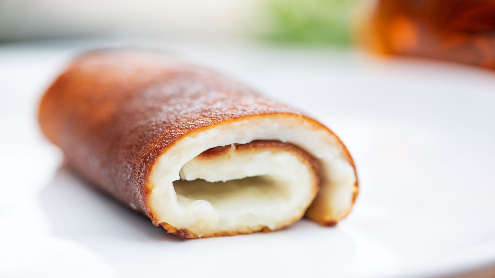

Hazırlanma Süresi
15 dakika
Pişirme Süresi
35 dakika
Kaç Kişilik
4 Kişilik
Malzemeler
- 7 su bardağı süt
- 1 çay bardağı pirinç unu
- 1 çay bardağı buğday nişastası
- 1,5 su bardağı toz şeker
- 1 paket vanilya
- 1 yemek kaşığı tereyağı
- 4 yemek kaşığı pudra şekeri
Yapılışı
- Sübyesi için; bir kasede 2 su bardağı sütü, yarım bardak toz şekeri, buğday nişastasını ve pirinç unu karıştırın. Topak kalmayana kadar çırpıcı yardımıyla çırpın.
- Geniş bir tencereye kalan 5 su bardağı sütü ve 1 su bardağı şekeri ilave edin. Bir taşım kaynatın. Kaynayan süte yavaş yavaş sübyeyi ilave ederek sürekli karıştırın. Ocağı kısık ateşe getirerek, sürekli karıştırarak muhallebi kıvamına gelene kadar pişirin.
- Muhallebi koyulaşıp göz göz olduğunda ocaktan alın ve vanilyayı ilave edip tekrar karıştırın. Oda sıcaklığında soğumaya bırakın.
- Köşeli bir borcamı tereyağıyla yağlayın ve üzerine eşit olacak şekilde pudra şekerini eleyin.
- Tepsiyi ocak üzerinde çevire çevire karışımı yakın. Tüm şeker eriyip karamelize olunca, tepsinin dibine muhallebiden ince bir kat sürün ve bir tur da muhallebiyle birlikte yakın.
- Yakma işlemi bittiğinde kalan muhallebiyi de tepsiye dökün. Üzerini bir spatula yardımıyla düzeltin.
- Buzdolabına kaldırıp kıvam alması için soğuttuğunuz tatlıyı, ince uzun dilimlere ayırın ve spatula yardımıyla kıvırarak rulo şeklinde sarın. Ev yapımı mis kokulu kazandibiniz hazır, afiyet olsun!